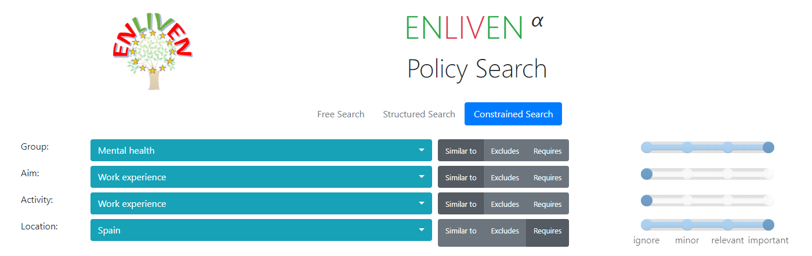
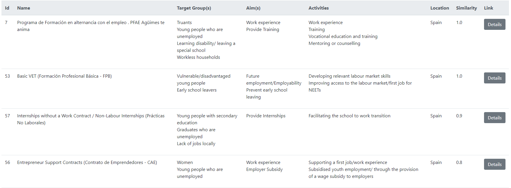
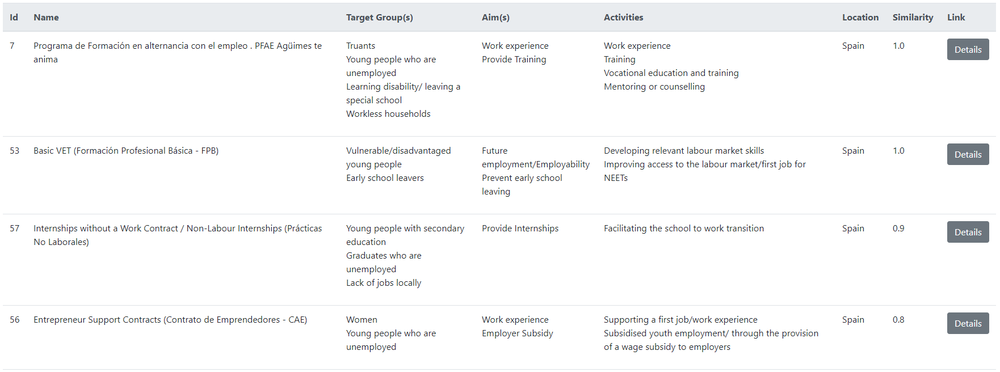

1. About the ENLIVEN prototype
This manual is structured in multiple sections. The first section will give a brief explanation of what the ENLIVEN engine is and the goal it aims to accomplish within the ENLIVEN project. The second section will give a more detailed explanation of the user interface and what information can be gleaned from it. Eventually, a fourth and fifth sections will be added. The fourth section will mainly focus on the future of the ENLIVEN engine and the changes it will go through as WP9 progresses. Finally, section five will give more details about what an IDSS is and how CBR works in the context of ENLIVEN.
The ENLIVEN research models how policy interventions in adult education markets can become more effective. Integrating state-of-the-art methodologies and theorisations (for example, Case-Based Reasoning methodology in artificial intelligence, bounded agency in adult learning), it implements and evaluates an innovative Intelligent Decision Support System to provide a new and more scientific underpinning for policy debate and decision-making on adult learning, especially for young adults. It utilises findings from research conducted by European and international agencies and research projects, as well as from the ENLIVEN project. It will enable policy-makers at European Union, national and organisational levels to enhance the provision and take-up of learning opportunities for adults, leading to a more productive and innovative workforce, and reduced social exclusion. (from h2020enliven.org)
2. User interface
We show in the following figure the querying interface and detail each element as follows:
- (a) the search parameters, correspond to the particular values that we are searching for in the knowledge base. They can be anything that is contained in the case base. Future expansions of the ENLIVEN prototype will allow for querying of entities which are not in the case base ;
- (b) the search modes, correspond to how we want to use the search parameters: similar to uses a similarity metric to not only retrieve the documents containing the corresponding values but also retrieve the documents containing similar values, excludes in order to not retrieve any document which contains the corresponding values (e.g. exclude all documents from Spain), requires to only retrieve documents with the corresponding values (e.g. retrieve only documents related to Spain).
- (c) the search weights, in the case of a similarity matching, allow us to assign a subjective important to a search parameter. One could for instance have every parameter in similarity search, and give high importance to country and low importance to target group. It does not have any effect in requires and excludes modes.
3. Example queries
3.1. Query 1: Policies targeting people with mental health issues in Spain.
We are searching for policies targeting people with mental illnesses, or similar situations, strictly constrained in Spain. We do not care about the activities involved in those policies or their aim, since we are only looking to run some analysis on the kind of policies enacted in one specific country.  
3.2. Query 2: Policies targeting youth through paid workplace experience.
In this query we are searching for all kinds of policies targeting youth through unpaid workplace experience, such as internships. In this case we care a bit more about the target group than we do about the fact that they use unpaid workplace experiences. Therefore, we set the two others parameters to ignore, and set the importance levels of target group to very high and activity to high. All parameters are set to similarity matching. 